01 · My role
One designer, the whole platform
TrackZone had no design team. For eighteen months I was it, and the role kept widening. Product strategy, research, UI, and delivery for a platform of more than ten modules, across web and mobile.
Product strategist
Set the long-term vision and the modular architecture. Prioritised features against customer pain, scalability, and what the hardware could actually do.
UX researcher
Ran field research and client meetings across municipalities, drivers, and internal tech teams, then turned it into flows and module structures.
UI designer
Designed every web and mobile screen across 10+ data-heavy modules (bin analytics, AI image review, route planning) on one system.
Project manager
Ran the agile process across firmware, backend, and design. Tracked the sprints, held the client relationship, shipped custom releases on time.
Holding all four at once meant every design decision was made with the roadmap, the research, and the engineering constraints already in the room.
02 · The problem
How do you make waste collection a data decision?
How might we help cities, industries, and waste-collection companies make data-driven decisions through real-time waste insight, efficient routing, and automation?
TrackZone runs on physical sensors bolted to real bins in the field. Every design decision had a hardware constraint underneath it: camera angle, battery life, offline connectivity, sensor delay. The job was to take an industry that runs on trucks and routes and make it legible as a screen.
03 · Research
Research done on the kerb, not in a lab
Because the clients were enterprises and municipalities, most research came from direct meetings: customers, municipality reps, drivers, and the internal firmware and hardware teams. I sat in on client calls to track what was actually breaking, and paired that with the engineers to map device limits, data flows, and the failure modes a UI would have to absorb.
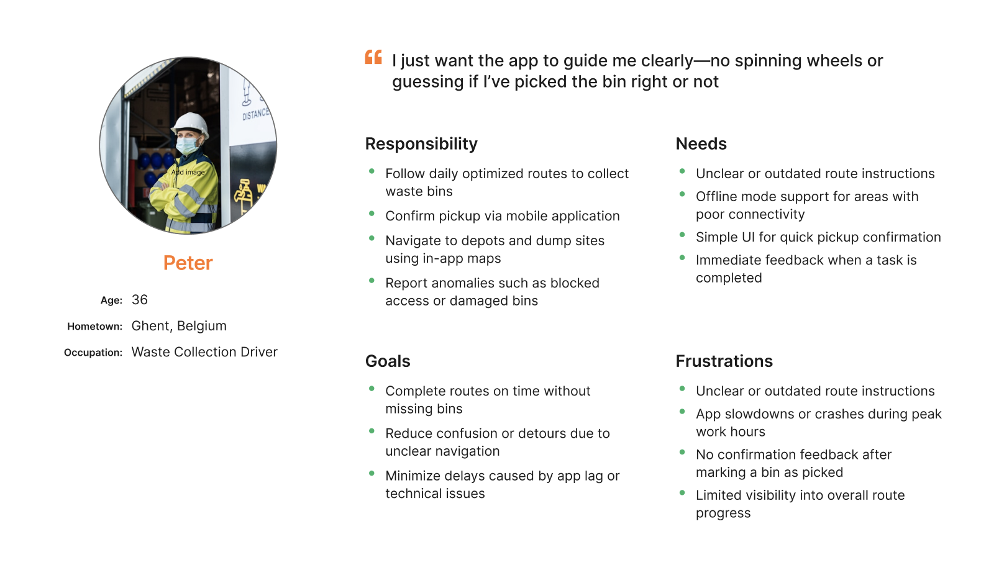
The pain points that shaped everything
- Overflow misdetection: poor fill-level calibration and the wrong camera angle meant bins flagged full when they weren't.
- No route visibility: admins had no live view of vehicle or bin coverage; drivers had no guidance.
- Slow reconfiguration: manual bin setup and downlink updates made every new area its own project.
04 · The modules
Ten-plus modules, one system
Each module shipped on its own release cycle but drew from the same components, so a client could switch on only what they'd bought and still get a coherent product. Kept deliberately high-level here. The main ones:
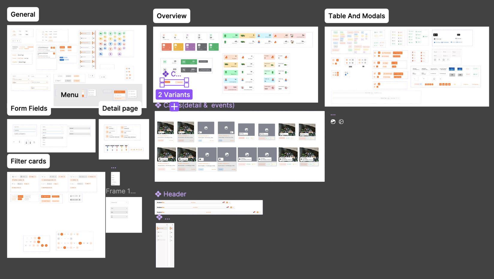
Bins monitoring
Real-time status (online, offline, full, overflowing, garbage around) with alerts for tampering, fire, and pickup. Built to scan a whole fleet fast, then drill into any single bin.
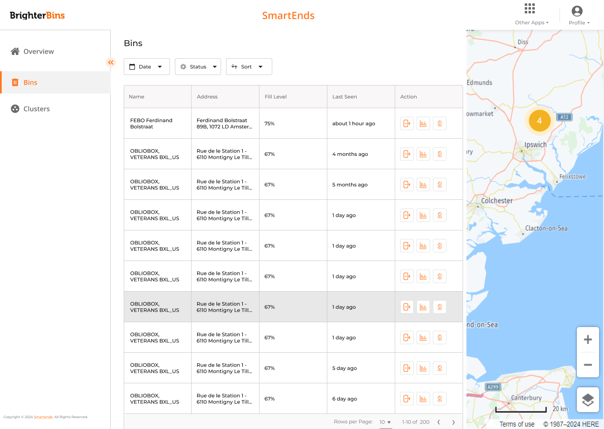
Track & trace
GPS tracking for bins and vehicles on one map, with geofencing, so an operator sees coverage as it happens rather than after the shift.
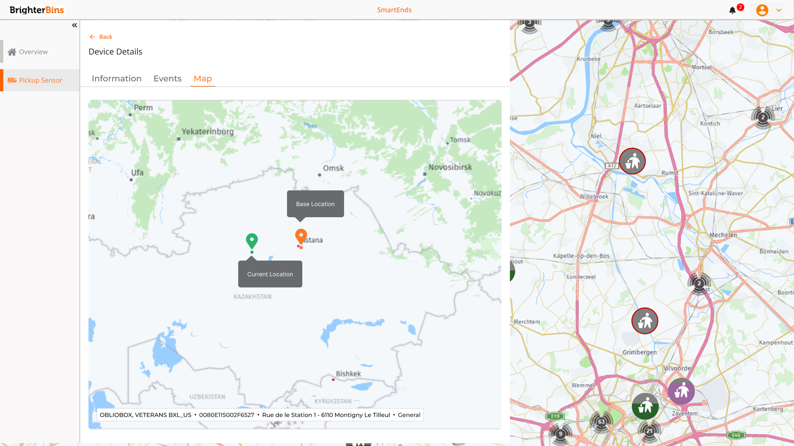
Vision AI
Fill level read from a camera image instead of a distance sensor, plus contamination detection that flags glass or the wrong material in a recycling stream.
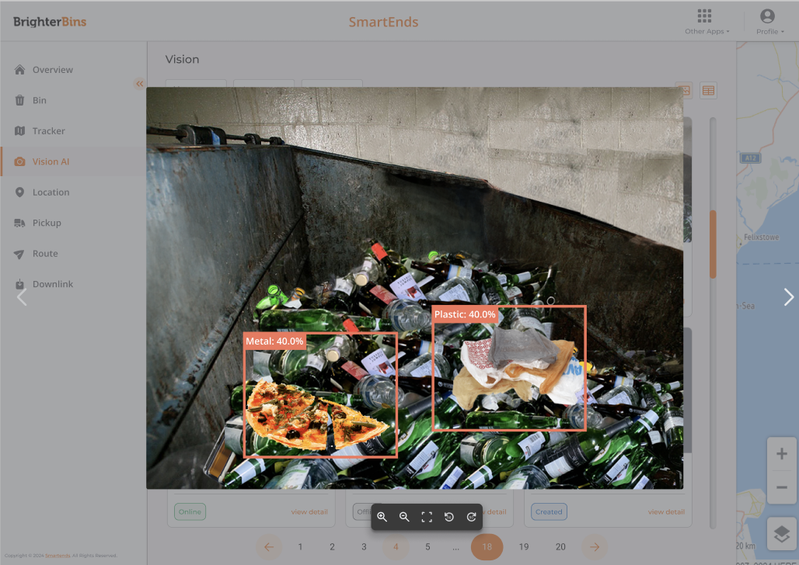
Location clustering
Bins grouped into customer-defined clusters, each with an average fill level, and drag-and-drop to reassign as an area changes.
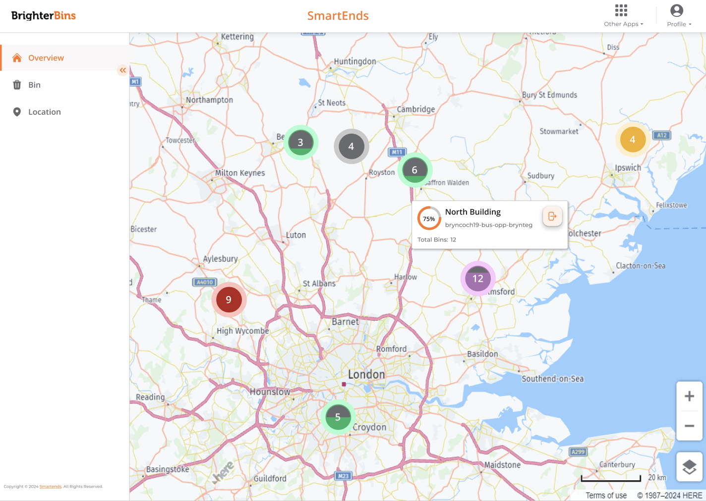
Route optimisation
Manual mode: pick waste type, zone, bins, vehicle, driver. Dynamic mode: routes auto-generated from which bins are actually full, wired to a scheduler and notifications.
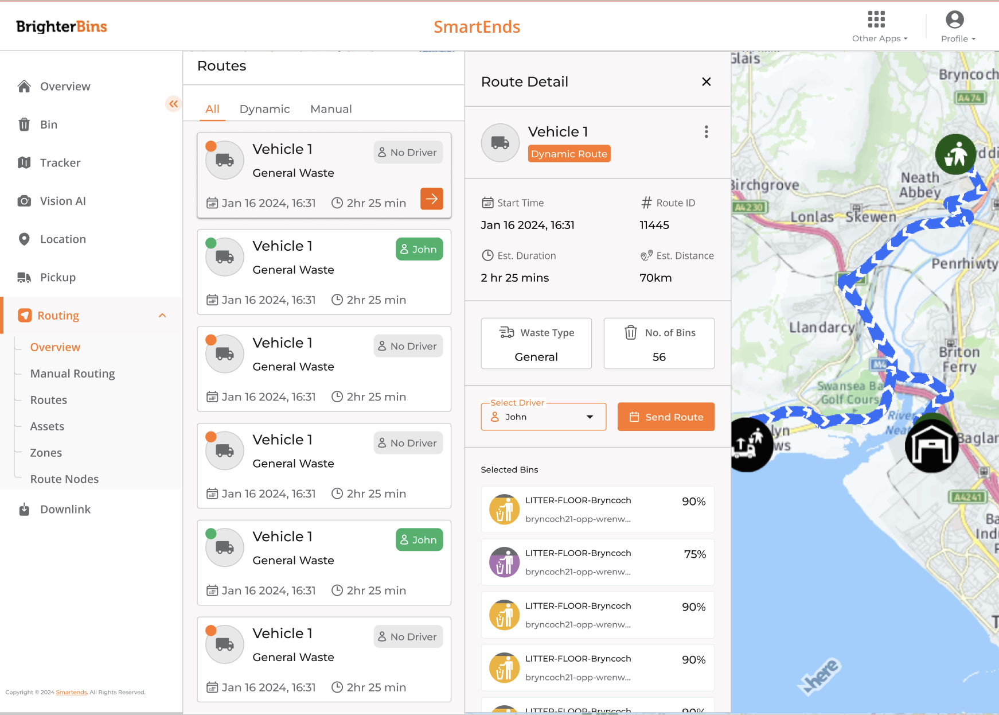
Pickup sensor & downlink
A motion sensor that confirms a bin was actually lifted, for accurate collection counts and cost, plus downlink config to batch-tune how often each bin reports home.
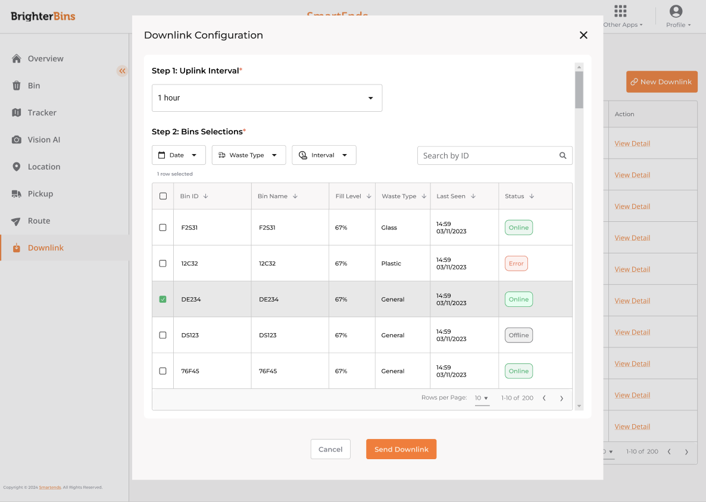
Mobile app: the driver's routing flow
Admins provision bins by QR and watch routes live. The driver side is one guided loop, kept deliberately simple for use at the wheel: pick up the day's route on a map, follow turn-by-turn to each bin, mark it done or skip with a reason, and close out at the depot.
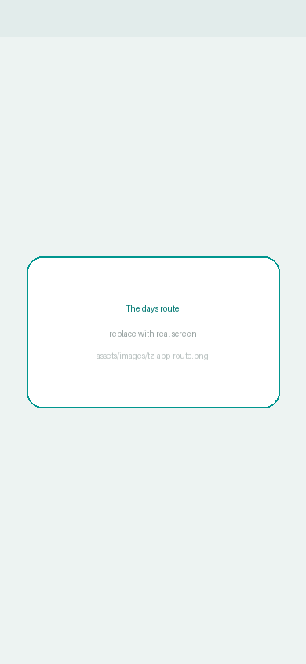
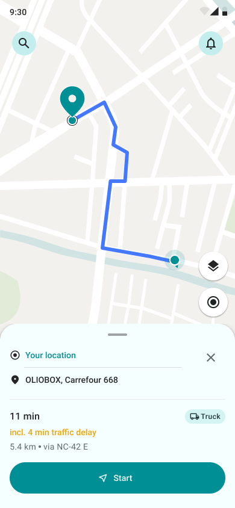
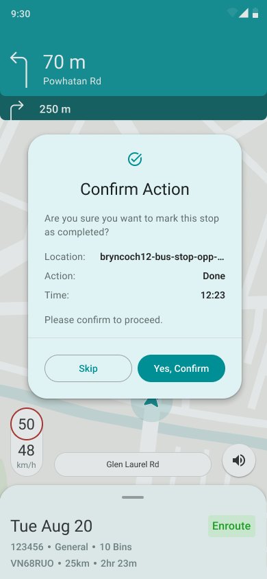
KPI dashboard
Sustainability metrics: diversion rate across recycle / reuse / compost / dispose, plus volume and weight over time, so a city can see the trend, not just today.
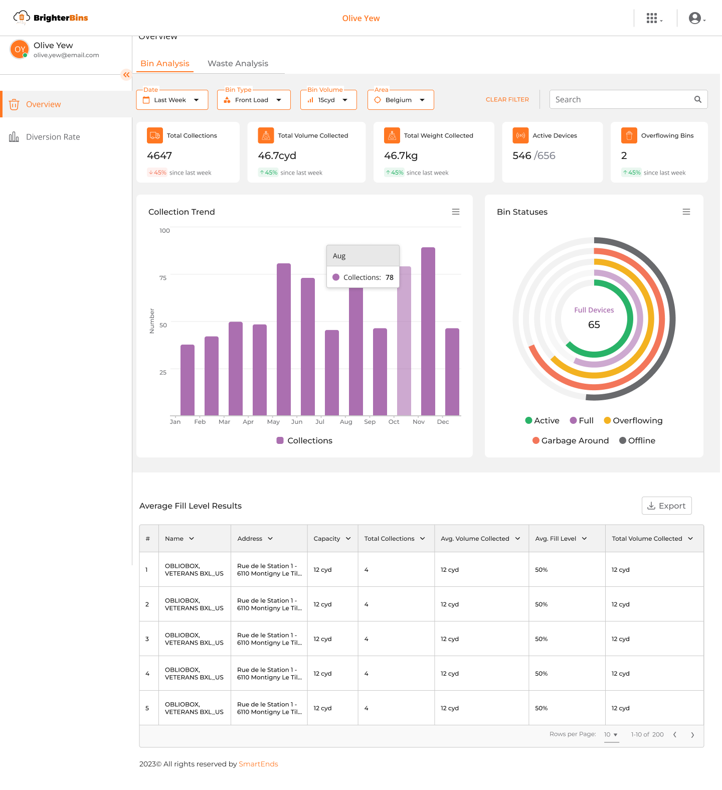
Subscription
Three tiers (Essential, Pro, Vision AI) with Mollie payments and feature gating per plan, so the product sells itself without a sales call.
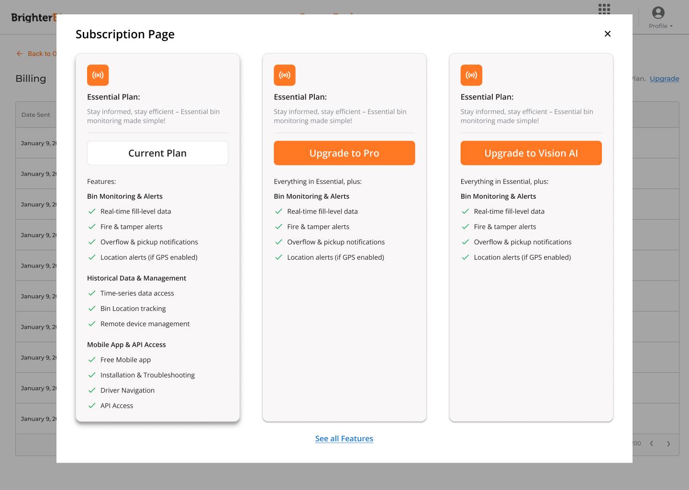
05 · Testing
Weekly reviews, pilot feedback, relabel, repeat
Testing was continuous rather than a phase: weekly stakeholder reviews, feedback sessions with internal users and pilot clients, and steady revision of logic, labels, and interaction patterns wherever something read as ambiguous. Shipping custom releases to real municipalities meant the feedback loop was never theoretical.
06 · Impact
Scalable software in a hardware industry
TrackZone put a SaaS layer into a sector that had been almost entirely hardware. Clients use it to cut overflow incidents, shave route time, track cost and CO₂, and push recycling rates up.
What I delivered
- Bridged hardware and software by designing against real sensor thresholds, device communication, and camera positioning.
- Turned dense IoT data into interfaces an operator can read at a glance, on web and on mobile.
- Cut support load with self-serve configuration (downlink, route planner) instead of tickets.
- Kept releases on time across three engineering teams through agile planning and constant stakeholder alignment.
07 · Reflection
What eighteen months on one platform taught me
- Design at platform scale is architecture. The most valuable thing I made wasn't a screen, it was the modular system that let ten features ship separately and still feel like one product.
- Hardware doesn't bend to your layout. Battery, camera angle, offline windows, and sensor lag set the boundaries; the design's job is to make those limits invisible to the person using it.
- Enterprise research looks different. With municipal clients there's no usability lab; the insight is in the client call, the driver ride-along, and the firmware engineer's “that won't work.” Learning to run research that way was half the job.
- Four hats is a superpower and a tax. Strategy, research, design, and PM in one person meant zero translation loss between them, and no one to catch my blind spots, so I had to build the review process that did.
- Ambiguity is a bug. Nearly every relabel and logic fix in testing traced back to a moment where the interface let someone guess. Removing guesses was most of the work.
- Sustainability is something you can design for. Diversion rate went from a figure in a quarterly report to something an operator could act on daily, and that reframing is the part I'm proudest of.